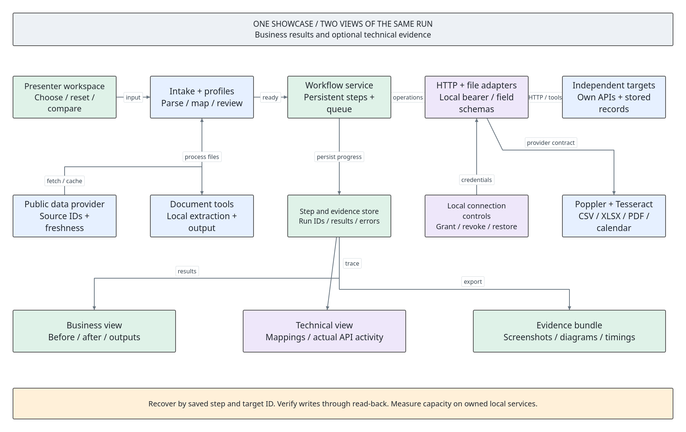
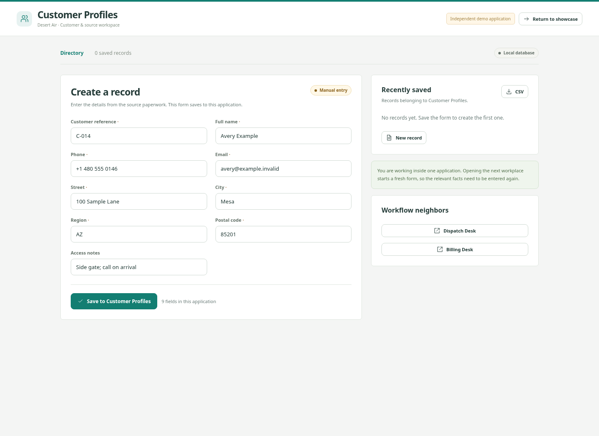
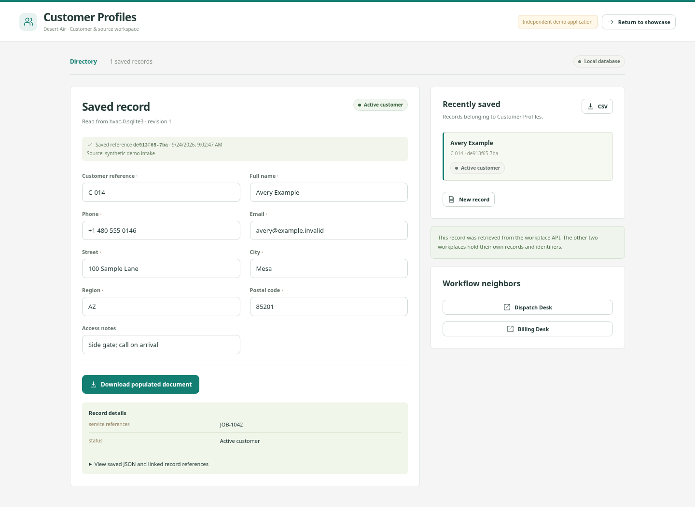

The complete operator’s book
The Works
Learn every screen, every handoff, and every recovery.
The complete Relayworks operator's book and hands-on checklist.
This book starts at your desktop. It teaches you how to open the project, understand each screen, type the manual examples, run the automation, break a handoff deliberately, recover it, and explain the guts. You do not need to supply a spreadsheet, create an account, buy software, or know programming to complete the main lessons.
Every checkbox is something for you to do or verify. Checking a box records your progress in this book; it does not execute an action in Relayworks. Keep this book in one browser tab and the demo in another. The named buttons below are the labels in the actual application.
Prepared for this workspace · September 24, 2026 · All practice businesses and people are fictional.
Contents
- 00. How to use this book
- 01. Open the books and start the demo
- 02. Tour the station before changing anything
- 03. The guts: what happens to one piece of information
- 04. HVAC: do the manual work, field by field
- 05. HVAC: enter once and verify all three destinations
- 06. HVAC: finish the visit and reuse the customer
- 07. Open the ugly source files before importing them
- 08. Clean, map, correct, and batch a spreadsheet
- 09. Extract a PDF and read a scanned page
- 10. Pull a real Google Sheet into three workplaces
- 11. Let the timer do the source pull
- 12. Sports: follow public API data into a briefing
- 13. Law office: intake, documents, and a review hold
- 14. Clinic administration: register, book, and handle a collision
- 15. Retail: receive stock once, publish the available quantity
- 16. Independent seller: item, listing, sale, and packing slip
- 17. Property operations: match an invoice to the approved repair
- 18. Community events: registration, capacity, and check-in
- 19. Break a handoff and recover without starting over
- 20. Read the technical view without guessing
- 21. Use the screenshots and take the outputs with you
- 22. Open the flowcharts in Archi
- 23. Stop, restart, and back up your practice station
- 24. Troubleshooting: choose the problem you actually have
- 25. Rehearse until you can present without this book
- 26. Exact field reference and glossary
No chapters match. Clear the search or try another word.
How to use this book
Your controls
The learning route
Read chapters 01–03 first. Chapters 04–06 teach the centerpiece thoroughly. Chapters 07–12 teach files and external sources. Chapters 13–18 cover the other workplaces. Chapters 19–25 cover proof, diagrams, running the station, repair, and rehearsal. Chapter 26 is the exact field reference for all eight workflows.
Each exercise states its starting conditions. Reset workplaces affects the selected fictional business, including records you just practiced. It keeps historical run snapshots and screenshots. A reset is appropriate before a fresh lesson; do it before entering that lesson's new records.
________________________________________________________________________
________________________________________________________________________
Open the books and start the demo
Route A: from your file manager
This machine has KDE, the Dolphin file manager, the Kitty terminal, and KRunner. You can use the installed names rather than guessing which terminal to download.
dolphin /home/ethan/pg/free_intro/free_intro_1The desktop launcher is installed for this folder on this machine. Moving the entire project to a different path requires updating the desktop file's Exec and Path entries, or simply using the terminal route from the new folder.
Route B: from the terminal, with automatic browser opening
cd /home/ethan/pg/free_intro/free_intro_1
python3 scripts/launch.pyRoute C: keep the server visible in a terminal
Use this route when learning how the station runs, or when you want a terminal whose Ctrl+C stops the service. Use it when the service is stopped. If the demo already opens successfully, continue using that instance instead of launching another listener on the same ports.
What these addresses mean
127.0.0.1 means this computer. 8875 is the door the browser uses. A second door, 8876, is used by the workplace API behind the scenes. Typing this address on a customer's different computer points to their computer, not yours. This setup is a local presentation, not a published internet site.
Opening web/index.html directly is not how you run the application: its requests need the local server. Opening THE_WORKS.html directly is supported because the book is an offline document.
Tour the station before changing anything
The main navigation
| Tab | What you use it for | What it does not automatically do |
|---|---|---|
| The workflow | Read the business story and diagram. | It does not create records. |
| Do it manually | Read source paperwork and open the three independent workplace forms. | Saving one manual form does not fill the other apps. |
| Automate it | Review the one-time input, import a source, preview mapping, submit a run. | A mapping preview does not save workplace records. |
| Saved results | Inspect verified outputs and run the business follow-up. | An old run snapshot is not necessarily the latest revision of every workplace record. |
| Under the hood | Inspect requests, field names, permissions, outages, costs, and structure. | Re-enabling a destination does not by itself resume a failed job; click the resume control. |
The eight stations
| Workflow | Fictional business | Three independent apps |
|---|---|---|
| HVAC & field service | Desert Air | Customer Profiles → Dispatch Desk → Billing Desk |
| Sports & personal reports | Touchline Daily | Sports Worksheet → Schedule Board → Report Inbox |
| Law office | Juniper Legal | Matter Desk → Document Desk → Task Calendar |
| Clinic administration | Cedar Clinic | Registration Desk → Appointment Board → Intake Packet Desk |
| Retail & inventory | Corner Supply | Receiving Desk → Stock Ledger → Online Catalog |
| Independent seller | Second Story | Item Register → Listing Desk → Sales and Packing Desk |
| Property operations | Maple Properties | Property Desk → Contractor Board → Owner Report Desk |
| Community & events | Gather Workshop | Registration Desk → Session Board → Badge and Attendance Desk |
Buttons you will see repeatedly
New record gives you an empty workplace form. Save to [app name] saves one manual record. Populate all three apps starts the automated run. Open saved record opens the actual destination record in a new tab. Download populated document exports that workplace's document. Return to showcase navigates the current workplace tab back to Relayworks; keeping the original showcase tab is often easier while practicing.
Working drafts: the intake remembers your edits as you type while you switch views in the same browser tab. Preview field mapping checks the current values and shows their destination names; it is not a disk save. Reloading the browser clears working memory; submitted runs and saved workplace records remain on disk.
The guts: what happens to one piece of information

Follow Avery's name
You enter Avery Example into the shared field called Full name. The Customer Profiles API expects a field named display_name; Dispatch Desk expects contact_name; Billing Desk expects addressee. The mapping translates the field name while preserving the value.
The engine sends a POST request containing the mapped record to Customer Profiles. The app saves the record in its own SQLite database and returns a record ID. The engine sends a GET request for that ID and compares the saved values. It then performs the next workplace's POST and GET, carrying the earlier record references along.
This is six ordinary HTTP operations for a clean three-destination intake: three writes and three read-backs. A failed request or later follow-up adds more trace entries. Source fetching and document extraction are additional work, separate from those six destination operations.
Where the parts live
| Folder or file | What it contains | How you should normally interact with it |
|---|---|---|
app/config.py | Eight sets of fields, defaults, and destination mappings. | Read to inspect the contract; the UI handles normal entry. |
app/data_tools.py | CSV/XLSX reading, cleanup, PDF/OCR, public-source reads, exports. | Use Sources & connections. |
app/engine.py | Validation, business rules, saved runs, duplicate protection, execution. | Use the intake, results, and technical screens. |
app/server.py | The two HTTP listeners and the source timer. | Start it with the supplied launcher or terminal command. |
web/ | The visible application and book reader. | Open the browser interface. |
runtime/coordinator.sqlite3 | Run history, steps, mappings, source records, and scheduling settings. | Use Run history. Back up the folder before moving it. |
runtime/workplaces/ | Twenty-four separate SQLite workplace databases. | Open the corresponding workplace tabs. |
practice_files/ | Actual files for the exercises in this book. | Open, inspect, and upload them. |
evidence/ | Retained screenshots and their manifest. | Use Before & after or open PNG files directly. |
diagrams/ | Ten PNG diagrams and the editable Archi board. | Use the workflow image or chapter 22. |
fixtures/public/ | Recorded public provider responses and verification metadata. | Use the labelled replay buttons when offline. |
The stores are independent even though they run on one computer and reuse a common interface design. These are purpose-built fictional workplace apps, not installations of commercial billing, medical, legal, or marketplace software. The public Google and OpenF1 reads are actual external connections.
HVAC: do the manual work, field by field

Goal: experience the repeated entry. Starting state: the server is running, the source is the supplied HVAC example, and you are prepared to clear the HVAC demo records for this exercise.
Prepare the three empty workplaces
| Form label | Exact practice value | Requirement |
|---|---|---|
| Customer reference | C-014 | Required |
| Full name | Avery Example | Required |
| Phone | +1 480 555 0146 | Required |
avery@example.invalid | Required | |
| Street | 100 Sample Lane | Required |
| City | Mesa | Required |
| Region | AZ | Required |
| Postal code | 85201 | Required |
| Job reference | JOB-1042 | Required |
| Reported issue | AC is blowing warm air | Required |
| Equipment | Outdoor condenser · Unit A | Required |
| Technician | Morgan Lee | Required |
| Visit slot | 2026-10-06 10:00 | Required |
| Diagnostic fee (USD) | 95 | Required |
| Access notes | Side gate; call on arrival | Optional |
Customer Profiles: nine fields
Dispatch Desk: thirteen fields
Billing Desk: ten fields
What you just proved
You completed 32 form fields across the three workplaces. Eight common customer fields appeared in all three, making 24 shared-field entries. These counts describe the demo's forms; you have not yet measured how long a real employee takes or what a real product already fills automatically.
________________________________________________________________________
________________________________________________________________________
HVAC: enter once and verify all three destinations

Goal: produce the same business records from one intake. Starting state: you have finished the manual lesson or are ready for a fresh HVAC run.
Replay the same input without creating a new job
One intake contained 15 facts instead of 32 entries across disconnected forms. That does not mean every real office saves exactly 17 keystrokes: native autofill, imports, setup, exception review, and business rules change the real baseline.
HVAC: finish the visit and reuse the customer
Starting state: the fresh automated HVAC intake from chapter 05 is complete. If it is not, complete that chapter first.
Add the completion event
Give the same customer a new service job
If a second intake says the job is already completed: check the job reference. Reusing JOB-1042 asks to overwrite the completed job; a return visit uses JOB-1043 or another new reference.
Open the ugly source files before importing them
Goal: see that the messy data is an actual file, not a screenshot pretending to be a spreadsheet.
libreoffice /home/ethan/pg/free_intro/free_intro_1/practice_files/hvac-ugly.xlsxWhat each format means here
CSV is a text table with separators. XLSX is an Excel-format workbook. You do not need Microsoft Excel to read the supplied files. PDF can contain selectable text or merely a picture of a page. PNG/JPG are images. The app chooses its import tool from the file type and content; the business destination comes from your workflow selection and mapping.
There is a PDF, CSV, and XLSX for each business: hvac, sports, legal, clinic, retail, reseller, property, and events. The PNG scan is supplied for HVAC. All business people and records in these practice files are synthetic.
Clean, map, correct, and batch a spreadsheet
Inspect the supplied workbook
Map one good row
Correct the bad row without overwriting Avery
Batch the ready rows
Import the actual file yourself
________________________________________________________________________
________________________________________________________________________
Extract a PDF and read a scanned page
Text PDF exercise
Image OCR exercise
What to expect with other documents
The importer is designed for labelled forms like these samples. It does not promise to understand arbitrary handwriting or any PDF layout. It first tries PDF text extraction; a PDF without enough text can use local rasterization and OCR. Scanned PDF OCR reads the first three pages. Missing tools, unreadable files, or unsupported formats produce an error instead of an invented successful extraction.
Pull a real Google Sheet into three workplaces
Goal: demonstrate external information arriving without the presenter creating a Google account or key. Starting state: internet is available for the live path. The offline path is below.
Bring in the entire ready table
Offline rehearsal
This is a public read connection. It does not write changes back into the Google Sheet and does not implement private Google OAuth. The generated row-position IDs suit this fixed practice sample. A business spreadsheet that is sorted or edited needs a stable ID column mapped from the source.
Let the timer do the source pull
Goal: show the difference between clicking a button and a server-triggered refresh. Starting state: the local server and internet will stay available for at least two minutes. One source schedule can be configured at a time.
Unchanged mapped business input reuses a saved run even though the source is fetched again. A schedule continues while you navigate to another page or close a browser tab, because the server owns it. Stopping the server stops execution. Its saved configuration can be enabled again on a later restart, so turn the schedule off explicitly when the rehearsal is finished.
The timer uses its source's suggested field mapping and demo defaults. It does not copy every edit you made in an earlier intake. Configuring a custom production schedule, stable business IDs, error policy, and provider rate limits is separate engineering work.
Sports: follow public API data into a briefing
The fictional company is Touchline Daily. Its three apps are Sports Worksheet, Schedule Board, and Report Inbox. This demonstration reads a fixed historical Formula 1 session from OpenF1, a community data project. It is not a live race feed.
First, practice the manual reporting desks
Now use the real historical source
Historical reads are the free path used here. Paid live access is excluded. A five-minute timer makes three requests per tick: 3 × 288 = 864 requests if left on for a full day before retries. That is arithmetic, not a promise about a provider's allowed quota or the station's throughput.
Law office: intake, documents, and a review hold
Company: Juniper Legal. Starting state: reset Law office. Meaning of the example: repeat administrative client information across matter records, a populated packet, and an appointment task. It does not determine legal rights or calculate legal deadlines.
Understand the three apps
| App | Its job | What to inspect |
|---|---|---|
| Matter Desk | Retain the client, parties, matter description, and reference. | Client identity, MAT-0204, and the other party. |
| Document Desk | Reuse client/matter details in an administrative client packet. | Addressee, office name, matter description, downloadable populated document. |
| Task Calendar | Reuse the matter reference and contact details with a supplied appointment time. | The date you supplied and its connection to the matter. |
Manual rehearsal
Automate and deliberately require review
Clinic administration: register, book, and handle a collision
Company: Cedar Clinic. Starting state: reset Clinic administration. All patients, providers, and documents here are synthetic administrative examples.
| App | Its job | What to inspect |
|---|---|---|
| Registration Desk | Own patient reference and basic contact/demographic details. | PAT-0310, Jordan Example, date of birth, contact details. |
| Appointment Board | Reserve a provider/time combination. | Demo Provider A and the appointment slot. |
| Intake Packet Desk | Reuse patient and referral facts in a packet. | Referral REF-022, visit type, populated document. |
Retail: receive stock once, publish the available quantity
Company: Corner Supply. Starting state: reset Retail & inventory. A receipt identifies a delivery; a SKU identifies a product. Those are different IDs.
| App | Its job | What to inspect |
|---|---|---|
| Receiving Desk | Record the supplier delivery and counted quantity. | Receipt REC-088, purchase order PO-031, SKU FLT-20, quantity 12. |
| Stock Ledger | Maintain stock on hand and reserved quantity by SKU. | stock_quantity 12 and available_quantity 10 after the first delivery. |
| Online Catalog | Store the available quantity passed from the ledger. | The same SKU and availability 10. This is the local catalog, not a live website listing. |
The accepted practice SKUs are FLT-20, KIT-07, and BOLT-12. Another SKU is held for mapping. A production system also needs its actual product catalog, corrections/returns, units, multi-location rules, and its storefront's supported interface.
Independent seller: item, listing, sale, and packing slip
Company: Second Story. Starting state: reset Independent seller. The practice item is one physical vintage side table, not an unlimited-stock product.
| App | Its job | What to inspect |
|---|---|---|
| Item Register | Own the item SKU, description, condition, dimensions, price, and stock. | USED-072, one unit initially. |
| Listing Desk | Reuse the product facts as a local listing draft. | The same description, condition, measurements, and price. |
| Sales and Packing Desk | Reuse item/shipping facts, then add buyer and destination after a sale. | Packing paperwork with buyer details after the follow-up. |
A packing slip is not a purchased postage label. A local listing draft is not a published eBay listing. A future marketplace connector needs the seller's approved account/application access and platform-specific rules.
Property operations: match an invoice to the approved repair
Company: Maple Properties. Starting state: reset Property operations.
| App | Its job | What to inspect |
|---|---|---|
| Property Desk | Keep the tenant's repair request and property/unit context. | Ticket FIX-016, property PROP-03, unit 2B, reported leak. |
| Contractor Board | Reuse site/contact facts in the work order. | Contractor, access window, same ticket. |
| Owner Report Desk | Keep the report and approved estimate, then match the invoice. | Estimate 180 and the matched invoice reference/amount. |
The button records a matching result; it does not pay a contractor. The current presenter dialog does not contain a separate management approval process for overages. Demonstrate the hold and correction, then describe a real approval workflow as work to scope with the owner.
Community events: registration, capacity, and check-in
Company: Gather Workshop. Starting state: reset Community & events, and ensure the source schedule is off. Otherwise the timer could add registrations while you practice a tiny capacity example.
| App | Its job | What to inspect |
|---|---|---|
| Registration Desk | Record attendee identity, contact, registration ID, and selected session. | REG-011, Avery Example, Repair café. |
| Session Board | Assign a seat or waitlist outcome using the supplied capacity. | Reserved or Waitlisted. |
| Badge and Attendance Desk | Reuse attendee/session details in a badge and attendance record. | Badge ready, Waitlisted, or Checked in. |
The demo models capacity as an intake field. A production event system should own capacity centrally and control who is allowed to change it. You raised it deliberately for this exercise; increasing capacity is not a generic way to bypass a real full-room constraint.
Break a handoff and recover without starting over
Goal: demonstrate the local API permission/outage controls with a clean, reproducible state. Use HVAC for these exact steps.
Repeat with an outage
Do not use unchanged already-completed input to demonstrate a new failure: deduplication will correctly reopen the successful old run without attempting fresh writes. Reset first, or deliberately use new business references and an unoccupied slot.
Read the technical view without guessing
| Code or status | Meaning in this demo | Presenter action |
|---|---|---|
| 200 | A read succeeded. | Inspect the returned record and verified step. |
| 201 | A workplace save succeeded. | Follow its record ID and read-back. |
| 403 | Destination write access is revoked. | Grant access, then resume. |
| 409 | Business conflict or an intervening record change. | Read the message; correct business conditions rather than blindly retrying. |
| 422 | Input did not meet validation requirements. | Correct the listed fields or complete the explicit review. |
| 503 | Destination write service is unavailable. | Restore service, then resume. |
| complete | The intended steps finished and read-backs verified. | Check whether the business outcome is reserved, waitlisted, draft, or completed. |
| needs_attention | Processing stopped with an unresolved issue. | Inspect the actual failed step and choose the relevant repair. |
| archived | The workplace was reset after this run. | Read it as historical evidence; create new work rather than resuming it. |
Use the screenshots and take the outputs with you
Gallery
Downloads
| Control | What you receive | Where to use it |
|---|---|---|
| Download populated document | PDF for one workplace record. | Inspect the job form, invoice draft, badge, packet, or report. |
| PDF packet | PDF describing the selected workflow run. | Show reviewed input and verified output references. |
| Excel export | XLSX with the run's saved destination values. | Open in Calc or another compatible spreadsheet program. |
| CSV in a workplace | CSV of that workplace's current records. | Compare a table of stored values or reuse an export. |
| Calendar file | .ics event for a workflow with a supported date/time. | Open in a calendar's import dialog. |
| Evidence bundle | ZIP containing run JSON/trace, PDF, diagrams, screenshots, and capture metadata. | Share a concrete proof package after checking its contents. |
Rebuild evidence only when you intend to reset demo records
Open the flowcharts in Archi
The editable board contains an overview, eight workflow views, and an architecture view. A PNG is a view of a diagram; the .archi.json file is the editable project.
/home/ethan/pg/archi/build/archi /home/ethan/pg/free_intro/free_intro_1/diagrams/showcase.archi.jsonThe app was located at the exact path above on this computer. If it is moved, the in-browser PNGs still work. The command python3 scripts/build_planning_assets.py --archi /home/ethan/pg/archi/build/archi regenerates the master board and PNGs; it replaces generated assets, so do not run it over hand edits you wanted to keep.
Stop, restart, and back up your practice station
Stop the timer before stopping the service
cd /home/ethan/pg/free_intro/free_intro_1
python3 scripts/launch.py --stopMake a local state backup
Do this with the service stopped so the coordinator and workplace files are copied at one quiet point. The following archive name is a practice example; choose a new filename for later backups so you keep earlier copies.
mkdir -p backups
python3 -m zipfile -c backups/relayworks-practice-001.zip runtimeRestore your own saved backup
python3 -m zipfile -e backups/relayworks-practice-001.zip .The backup contains local application state, not the entire source project, installed tools, or browser progress. Copying the whole project for another machine also requires Python and the document tools there, and a launcher path appropriate to that machine.
Troubleshooting: choose the problem you actually have
The page will not open
python3 app/server.py --port 8865 --workplace-port 8866 --data-dir /tmp/relayworks-practiceA button appears to do nothing
The imported data looks wrong
The run fails or reuses an old run
A public source is unavailable
My checklist ticks disappeared
Rehearse until you can present without this book
First rehearsal: learn the mechanics
Second rehearsal: explain the work, not just the buttons
Presentation-day checklist
________________________________________________________________________
________________________________________________________________________
Exact field reference and glossary
Use these tables when a manual exercise says “enter that app's source fields.” Each workflow includes its complete one-time intake and the exact subset each workplace receives. Enter the label's value in the matching form field; the technical API names are available under The translation layer.
HVAC & field service · Desert Air
| Form label | Exact practice value | Requirement |
|---|---|---|
| Customer reference | C-014 | Required |
| Full name | Avery Example | Required |
| Phone | +1 480 555 0146 | Required |
avery@example.invalid | Required | |
| Street | 100 Sample Lane | Required |
| City | Mesa | Required |
| Region | AZ | Required |
| Postal code | 85201 | Required |
| Job reference | JOB-1042 | Required |
| Reported issue | AC is blowing warm air | Required |
| Equipment | Outdoor condenser · Unit A | Required |
| Technician | Morgan Lee | Required |
| Visit slot | 2026-10-06 10:00 | Required |
| Diagnostic fee (USD) | 95 | Required |
| Access notes | Side gate; call on arrival | Optional |
Customer Profiles · 9 manual fields
Open Do it manually → Open Customer Profiles. Enter the following fields, then click Save to Customer Profiles.
| Form label | Value to enter | Destination API field |
|---|---|---|
| Customer reference | C-014 | customer_ref |
| Full name | Avery Example | display_name |
| Phone | +1 480 555 0146 | phone |
avery@example.invalid | email | |
| Street | 100 Sample Lane | street |
| City | Mesa | city |
| Region | AZ | region |
| Postal code | 85201 | postal_code |
| Access notes | Side gate; call on arrival | access_notes |
Dispatch Desk · 13 manual fields
Open Do it manually → Open Dispatch Desk. Enter the following fields, then click Save to Dispatch Desk.
| Form label | Value to enter | Destination API field |
|---|---|---|
| Customer reference | C-014 | external_customer_ref |
| Full name | Avery Example | contact_name |
| Phone | +1 480 555 0146 | contact_phone |
avery@example.invalid | contact_email | |
| Street | 100 Sample Lane | site_address |
| City | Mesa | city |
| Region | AZ | region |
| Postal code | 85201 | postal_code |
| Job reference | JOB-1042 | job_ref |
| Reported issue | AC is blowing warm air | issue |
| Equipment | Outdoor condenser · Unit A | equipment |
| Technician | Morgan Lee | technician |
| Visit slot | 2026-10-06 10:00 | slot |
Billing Desk · 10 manual fields
Open Do it manually → Open Billing Desk. Enter the following fields, then click Save to Billing Desk.
| Form label | Value to enter | Destination API field |
|---|---|---|
| Customer reference | C-014 | account_ref |
| Full name | Avery Example | addressee |
| Phone | +1 480 555 0146 | recipient_phone |
avery@example.invalid | delivery_email | |
| Street | 100 Sample Lane | billing_address |
| City | Mesa | city |
| Region | AZ | region |
| Postal code | 85201 | postal_code |
| Job reference | JOB-1042 | job_ref |
| Diagnostic fee (USD) | 95 | fee |
Sports & personal reports · Touchline Daily
| Form label | Exact practice value | Requirement |
|---|---|---|
| Event reference | DEMO-RACE-01 | Required |
| Report recipient | Alex Example | Required |
| Delivery address | alex@example.invalid | Required |
| Team / driver | Synthetic Racing | Required |
| Event / session | Demo Grand Prix | Required |
| Event date | 2026-10-04 14:00 | Required |
| Result / best lap | Awaiting source | Required |
| Laps counted | 0 | Required |
| Display timezone | America/Phoenix | Required |
Sports Worksheet · 6 manual fields
Open Do it manually → Open Sports Worksheet. Enter the following fields, then click Save to Sports Worksheet.
| Form label | Value to enter | Destination API field |
|---|---|---|
| Event reference | DEMO-RACE-01 | event_ref |
| Team / driver | Synthetic Racing | team |
| Event / session | Demo Grand Prix | event_name |
| Event date | 2026-10-04 14:00 | event_date |
| Result / best lap | Awaiting source | result |
| Laps counted | 0 | laps |
Schedule Board · 5 manual fields
Open Do it manually → Open Schedule Board. Enter the following fields, then click Save to Schedule Board.
| Form label | Value to enter | Destination API field |
|---|---|---|
| Event reference | DEMO-RACE-01 | event_ref |
| Team / driver | Synthetic Racing | team |
| Event / session | Demo Grand Prix | event_name |
| Event date | 2026-10-04 14:00 | event_date |
| Display timezone | America/Phoenix | timezone |
Report Inbox · 8 manual fields
Open Do it manually → Open Report Inbox. Enter the following fields, then click Save to Report Inbox.
| Form label | Value to enter | Destination API field |
|---|---|---|
| Event reference | DEMO-RACE-01 | event_ref |
| Report recipient | Alex Example | addressee |
| Delivery address | alex@example.invalid | delivery_email |
| Team / driver | Synthetic Racing | team |
| Event / session | Demo Grand Prix | event_name |
| Event date | 2026-10-04 14:00 | event_date |
| Result / best lap | Awaiting source | result |
| Laps counted | 0 | laps |
Law office · Juniper Legal
| Form label | Exact practice value | Requirement |
|---|---|---|
| Matter reference | MAT-0204 | Required |
| Client name | Casey Example | Required |
| Client email | casey@example.invalid | Required |
| Phone | +1 480 555 0114 | Required |
| Mailing address | 42 Sample Avenue | Required |
| Other party | Orchard Demo LLC | Required |
| Matter description | Business agreement review | Required |
| Appointment | 2026-10-07 09:00 | Required |
| Office name | Juniper Legal | Required |
Matter Desk · 7 manual fields
Open Do it manually → Open Matter Desk. Enter the following fields, then click Save to Matter Desk.
| Form label | Value to enter | Destination API field |
|---|---|---|
| Matter reference | MAT-0204 | matter_ref |
| Client name | Casey Example | display_name |
| Client email | casey@example.invalid | email |
| Phone | +1 480 555 0114 | phone |
| Mailing address | 42 Sample Avenue | street |
| Other party | Orchard Demo LLC | other_party |
| Matter description | Business agreement review | matter_type |
Document Desk · 6 manual fields
Open Do it manually → Open Document Desk. Enter the following fields, then click Save to Document Desk.
| Form label | Value to enter | Destination API field |
|---|---|---|
| Matter reference | MAT-0204 | matter_ref |
| Client name | Casey Example | contact_name |
| Client email | casey@example.invalid | contact_email |
| Mailing address | 42 Sample Avenue | site_address |
| Matter description | Business agreement review | matter_type |
| Office name | Juniper Legal | office_name |
Task Calendar · 5 manual fields
Open Do it manually → Open Task Calendar. Enter the following fields, then click Save to Task Calendar.
| Form label | Value to enter | Destination API field |
|---|---|---|
| Matter reference | MAT-0204 | matter_ref |
| Client name | Casey Example | addressee |
| Client email | casey@example.invalid | delivery_email |
| Appointment | 2026-10-07 09:00 | appointment |
| Matter description | Business agreement review | matter_type |
Clinic administration · Cedar Clinic
| Form label | Exact practice value | Requirement |
|---|---|---|
| Patient reference | PAT-0310 | Required |
| Patient name | Jordan Example | Required |
| Date of birth | 1990-04-12 | Required |
| Phone | +1 480 555 0180 | Required |
jordan@example.invalid | Required | |
| Address | 18 Sample Road | Required |
| Referral reference | REF-022 | Required |
| Provider | Demo Provider A | Required |
| Appointment slot | 2026-10-08 11:00 | Required |
| Visit type | Administrative intake | Required |
Registration Desk · 6 manual fields
Open Do it manually → Open Registration Desk. Enter the following fields, then click Save to Registration Desk.
| Form label | Value to enter | Destination API field |
|---|---|---|
| Patient reference | PAT-0310 | patient_ref |
| Patient name | Jordan Example | display_name |
| Date of birth | 1990-04-12 | birth_date |
| Phone | +1 480 555 0180 | phone |
jordan@example.invalid | email | |
| Address | 18 Sample Road | street |
Appointment Board · 7 manual fields
Open Do it manually → Open Appointment Board. Enter the following fields, then click Save to Appointment Board.
| Form label | Value to enter | Destination API field |
|---|---|---|
| Patient reference | PAT-0310 | patient_ref |
| Patient name | Jordan Example | contact_name |
| Date of birth | 1990-04-12 | birth_date |
| Phone | +1 480 555 0180 | contact_phone |
| Provider | Demo Provider A | provider |
| Appointment slot | 2026-10-08 11:00 | slot |
| Visit type | Administrative intake | visit_type |
Intake Packet Desk · 7 manual fields
Open Do it manually → Open Intake Packet Desk. Enter the following fields, then click Save to Intake Packet Desk.
| Form label | Value to enter | Destination API field |
|---|---|---|
| Patient reference | PAT-0310 | patient_ref |
| Patient name | Jordan Example | addressee |
| Date of birth | 1990-04-12 | birth_date |
| Phone | +1 480 555 0180 | recipient_phone |
| Address | 18 Sample Road | billing_address |
| Referral reference | REF-022 | referral_ref |
| Visit type | Administrative intake | visit_type |
Retail & inventory · Corner Supply
| Form label | Exact practice value | Requirement |
|---|---|---|
| Receipt reference | REC-088 | Required |
| Supplier | Example Wholesale | Required |
| Purchase order | PO-031 | Required |
| Internal SKU | FLT-20 | Required |
| Item name | 20-inch replacement filter | Required |
| Counted quantity | 12 | Required |
| Unit cost (USD) | 8.5 | Required |
| Location | Main stockroom | Required |
| Reserved units | 2 | Required |
Receiving Desk · 7 manual fields
Open Do it manually → Open Receiving Desk. Enter the following fields, then click Save to Receiving Desk.
| Form label | Value to enter | Destination API field |
|---|---|---|
| Receipt reference | REC-088 | receipt_ref |
| Supplier | Example Wholesale | supplier |
| Purchase order | PO-031 | po_ref |
| Internal SKU | FLT-20 | sku |
| Item name | 20-inch replacement filter | item_name |
| Counted quantity | 12 | quantity |
| Unit cost (USD) | 8.5 | unit_cost |
Stock Ledger · 6 manual fields
Open Do it manually → Open Stock Ledger. Enter the following fields, then click Save to Stock Ledger.
| Form label | Value to enter | Destination API field |
|---|---|---|
| Receipt reference | REC-088 | receipt_ref |
| Internal SKU | FLT-20 | sku |
| Item name | 20-inch replacement filter | item_name |
| Counted quantity | 12 | quantity |
| Location | Main stockroom | location |
| Reserved units | 2 | reserved |
Online Catalog · 5 manual fields
Open Do it manually → Open Online Catalog. Enter the following fields, then click Save to Online Catalog.
| Form label | Value to enter | Destination API field |
|---|---|---|
| Receipt reference | REC-088 | receipt_ref |
| Internal SKU | FLT-20 | sku |
| Item name | 20-inch replacement filter | item_name |
| Counted quantity | 12 | quantity |
| Reserved units | 2 | reserved |
Independent seller · Second Story
| Form label | Exact practice value | Requirement |
|---|---|---|
| Item SKU | USED-072 | Required |
| Listing title | Vintage oak side table | Required |
| Description | Solid oak; small mark on rear leg | Required |
| Condition | Used — good | Required |
| Price (USD) | 65 | Required |
| Weight (kg) | 7.2 | Required |
| Dimensions | 45 x 40 x 52 cm | Required |
| Seller | Casey Example | Required |
| Return address | 55 Sample Street | Required |
Item Register · 7 manual fields
Open Do it manually → Open Item Register. Enter the following fields, then click Save to Item Register.
| Form label | Value to enter | Destination API field |
|---|---|---|
| Item SKU | USED-072 | sku |
| Listing title | Vintage oak side table | title |
| Description | Solid oak; small mark on rear leg | description |
| Condition | Used — good | condition |
| Price (USD) | 65 | price |
| Weight (kg) | 7.2 | weight |
| Dimensions | 45 x 40 x 52 cm | dimensions |
Listing Desk · 7 manual fields
Open Do it manually → Open Listing Desk. Enter the following fields, then click Save to Listing Desk.
| Form label | Value to enter | Destination API field |
|---|---|---|
| Item SKU | USED-072 | sku |
| Listing title | Vintage oak side table | title |
| Description | Solid oak; small mark on rear leg | description |
| Condition | Used — good | condition |
| Price (USD) | 65 | price |
| Weight (kg) | 7.2 | weight |
| Dimensions | 45 x 40 x 52 cm | dimensions |
Sales and Packing Desk · 7 manual fields
Open Do it manually → Open Sales and Packing Desk. Enter the following fields, then click Save to Sales and Packing Desk.
| Form label | Value to enter | Destination API field |
|---|---|---|
| Item SKU | USED-072 | sku |
| Listing title | Vintage oak side table | title |
| Price (USD) | 65 | price |
| Weight (kg) | 7.2 | weight |
| Dimensions | 45 x 40 x 52 cm | dimensions |
| Seller | Casey Example | seller |
| Return address | 55 Sample Street | return_address |
Property operations · Maple Properties
| Form label | Exact practice value | Requirement |
|---|---|---|
| Ticket reference | FIX-016 | Required |
| Property reference | PROP-03 | Required |
| Unit | 2B | Required |
| Tenant contact | Morgan Example | Required |
| Phone | +1 480 555 0133 | Required |
| Reported issue | Kitchen faucet leak | Required |
| Access window | 2026-10-07 13:00–16:00 | Required |
| Contractor | Demo Plumbing | Required |
| Approved estimate (USD) | 180 | Required |
Property Desk · 6 manual fields
Open Do it manually → Open Property Desk. Enter the following fields, then click Save to Property Desk.
| Form label | Value to enter | Destination API field |
|---|---|---|
| Ticket reference | FIX-016 | ticket_ref |
| Property reference | PROP-03 | property_ref |
| Unit | 2B | unit |
| Tenant contact | Morgan Example | display_name |
| Phone | +1 480 555 0133 | phone |
| Reported issue | Kitchen faucet leak | issue |
Contractor Board · 8 manual fields
Open Do it manually → Open Contractor Board. Enter the following fields, then click Save to Contractor Board.
| Form label | Value to enter | Destination API field |
|---|---|---|
| Ticket reference | FIX-016 | ticket_ref |
| Property reference | PROP-03 | property_ref |
| Unit | 2B | unit |
| Tenant contact | Morgan Example | contact_name |
| Phone | +1 480 555 0133 | contact_phone |
| Reported issue | Kitchen faucet leak | issue |
| Access window | 2026-10-07 13:00–16:00 | access_window |
| Contractor | Demo Plumbing | contractor |
Owner Report Desk · 6 manual fields
Open Do it manually → Open Owner Report Desk. Enter the following fields, then click Save to Owner Report Desk.
| Form label | Value to enter | Destination API field |
|---|---|---|
| Ticket reference | FIX-016 | ticket_ref |
| Property reference | PROP-03 | property_ref |
| Unit | 2B | unit |
| Reported issue | Kitchen faucet leak | issue |
| Contractor | Demo Plumbing | contractor |
| Approved estimate (USD) | 180 | estimate |
Community & events · Gather Workshop
| Form label | Exact practice value | Requirement |
|---|---|---|
| Registration reference | REG-011 | Required |
| Attendee name | Avery Example | Required |
avery@example.invalid | Required | |
| Phone | +1 480 555 0146 | Optional |
| Session | Repair café | Required |
| Event date | 2026-10-10 10:00 | Required |
| Session capacity | 3 | Required |
| Organizer | Gather Workshop | Required |
Registration Desk · 5 manual fields
Open Do it manually → Open Registration Desk. Enter the following fields, then click Save to Registration Desk.
| Form label | Value to enter | Destination API field |
|---|---|---|
| Registration reference | REG-011 | registration_ref |
| Attendee name | Avery Example | display_name |
avery@example.invalid | email | |
| Phone | +1 480 555 0146 | phone |
| Session | Repair café | session |
Session Board · 6 manual fields
Open Do it manually → Open Session Board. Enter the following fields, then click Save to Session Board.
| Form label | Value to enter | Destination API field |
|---|---|---|
| Registration reference | REG-011 | registration_ref |
| Attendee name | Avery Example | contact_name |
avery@example.invalid | contact_email | |
| Session | Repair café | session |
| Event date | 2026-10-10 10:00 | event_date |
| Session capacity | 3 | capacity |
Badge and Attendance Desk · 6 manual fields
Open Do it manually → Open Badge and Attendance Desk. Enter the following fields, then click Save to Badge and Attendance Desk.
| Form label | Value to enter | Destination API field |
|---|---|---|
| Registration reference | REG-011 | registration_ref |
| Attendee name | Avery Example | addressee |
avery@example.invalid | delivery_email | |
| Session | Repair café | session |
| Event date | 2026-10-10 10:00 | event_date |
| Organizer | Gather Workshop | organization |
Plain-language glossary
| Term | Meaning here |
|---|---|
| API | A defined way for one program to ask another to read or change records. |
| Endpoint | One address/operation in an API, such as saving a workplace record. |
| Connector | Code translating a supported source or target interface into the workflow. |
| CSV | A plain-text table whose cells are separated by delimiters. |
| XLSX | The spreadsheet workbook format used by the practice Excel files. |
| OCR | Converting an image's letters and numbers into proposed text. |
| Mapping | Choosing which source value goes into each destination field. |
| Normalization | Consistent formatting of values without inventing missing meaning. |
| Validation | Checking requirements and rejecting input that fails them. |
| Provenance | Information about where the input came from and when/how it was obtained. |
| Business reference | A customer, job, item, receipt, or other real-world matching key. |
| Record ID | One destination's identifier for a saved row. |
| Run ID | The identifier for one workflow execution. |
| Event reference | A stable identity for an action such as a completion or sale. |
| Idempotent operation | Repeating the same identified operation does not apply its effect again. |
| Read-back | Fetching the saved record to verify what the destination actually kept. |
| Queue / worker | Waiting work and the process that executes it. |
| SQLite | The local database format used by the coordinator and each workplace. |
| Snapshot | Retained evidence of a past state; the current record may have a newer revision. |
| OAuth | A provider's authorization process for granting an app specific account access. This demo's public Sheet reader does not implement private OAuth. |
| Webhook | A provider sends an event to an integration when something happens. This demo's timer is polling, not a vendor webhook. |
| Polling | Reading a source again on a timer. |
| Sandbox | A test environment. These local fictional businesses are our demo environment, not a vendor's account sandbox. |